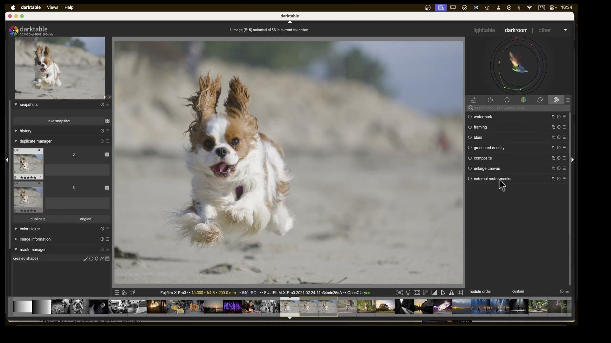
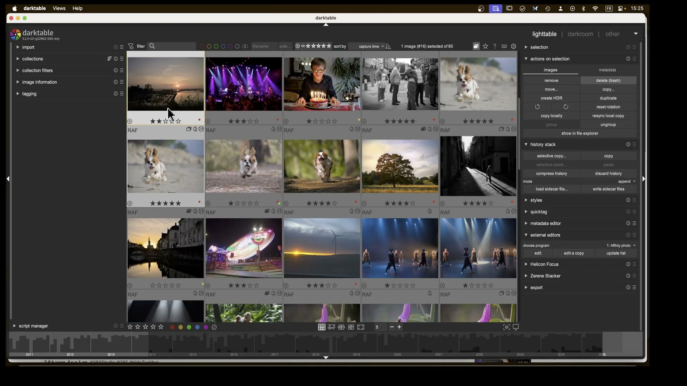
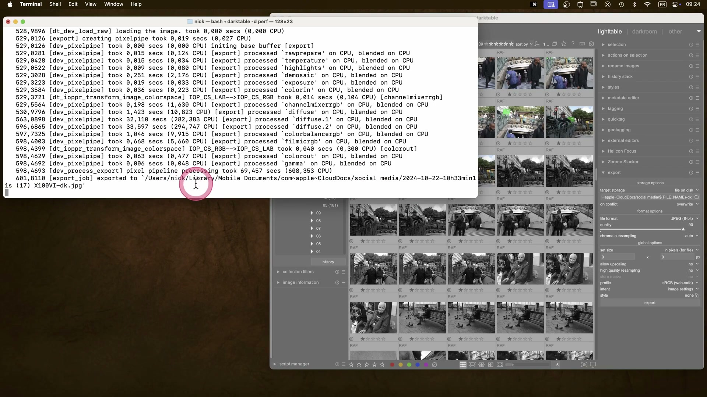
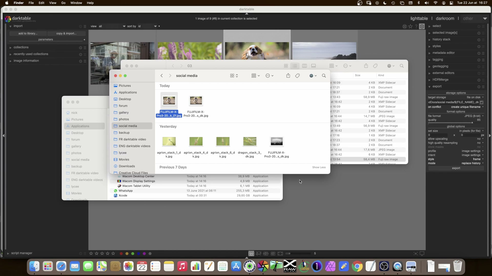
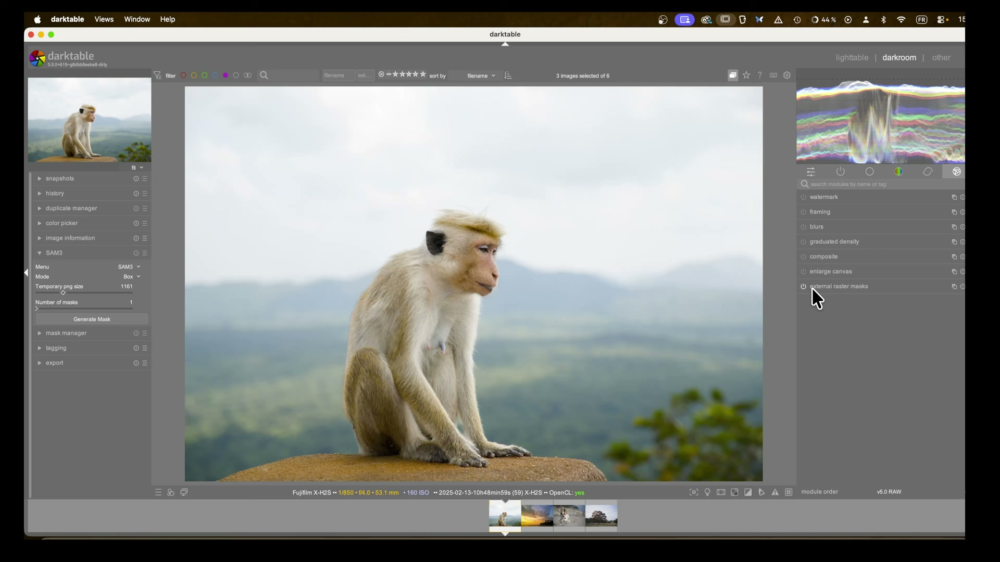
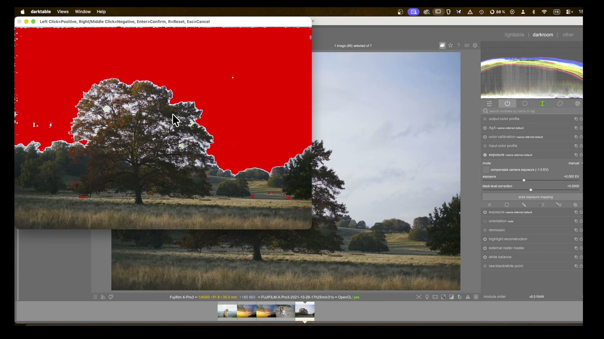

Raster Masks: External Plugins¶
Il modulo raster masks external plugins non è un singolo modulo nativo di darktable, ma una categoria funzionale che descrive il flusso di lavoro per importare, convertire e applicare maschere raster generate esternamente (es. con AI tools come SAM2/SAM3, Affinity Photo o Photoshop) nel pipeline di elaborazione di darktable 5.4+12. Questo workflow consente di sfruttare algoritmi di segmentazione avanzati non disponibili nativamente, integrandoli in modo non distruttivo nella pipeline scene-referred3.

Raster mask ≠ vettoriale
Una raster mask è un'immagine in scala di grigi (8/16 bit), dove ogni pixel ha un valore di opacità da 0.0 (trasparente) a 1.0 (opaco). A differenza delle maschere vettoriali (disegnate o AI-integrate), non è scalabile senza perdita di qualità e richiede un formato specifico: PFM (Portable FloatMap) per preservare la precisione floating-point necessaria alla pipeline scene-referred12.
Panoramica¶
Le maschere raster esterne sono utilizzate principalmente per:
- Segmentazione AI avanzata: isolamento preciso di soggetti complessi (capelli, pelliccia, foglie) tramite modelli come SAM2/SAM3, Light HQ-SAM o Segment Anything32
- Controllo locale fine: applicazione di regolazioni solo su aree definite con precisione sub-pixel, impossibile con maschere parametriche native1
- Integrazione con tool professionali: uso di maschere create in Affinity Photo, Photoshop o GIMP, dove si dispone di strumenti di ritocco manuale superiori2
Il processo si articola in quattro fasi obbligatorie, tutte critiche per il successo finale2:
- ✅ Preparazione dell’immagine base (nessuna trasformazione geometrica)
- ✅ Esportazione in TIFF/PNG a dimensioni identiche all’originale
- ✅ Creazione della maschera esterna e conversione in PFM
- ✅ Importazione e assegnazione come raster mask in un modulo attivo
Errore comune: trasformazioni geometriche
Qualsiasi operazione di crop, rotate, lens correction o perspective prima dell’esportazione invalida la maschera. La maschera PFM deve corrispondere pixel-per-pixel all’immagine RAW originale, altrimenti si verificano shift, stretching o clipping catastrofici2.
Flusso di lavoro consigliato¶
Il workflow standard, dimostrato in A Dabble in Photography, è il seguente2:
1. Preparazione: duplica l'immagine → disattiva TUTTI i moduli geometrici
|
2. Esportazione: TIFF 16-bit, no ICC, stessa risoluzione (es. 6240×4160 px)
|
3. Esterno: apri in Affinity Photo → crea maschera AI → esporta in PNG → converte in PFM
|
4. Importazione: abilita modulo (es. exposure) → clicca 'mask manager' → 'import raster mask'
Passo 1: Preparazione dell’immagine base¶
Prima di esportare, devi garantire che l’immagine sia “pulita” dal punto di vista geometrico:
- ✅ Abilita
duplicate managere crea un duplicato dedicato alle maschere - ✅ Disattiva tutti i moduli geometrici:
crop,orientation,lens correction,rotate and perspective2 - ✅ Evita modifiche cromatiche aggressive (es.
color balance rgbconhighlights = -25%) che alterano la percezione AI2 - ❌ Non usare
velvia,LUT 3Dotone equalizerprima dell’esportazione — possono confondere gli algoritmi esterni

Passo 2: Esportazione in TIFF/PNG¶
L’esportazione deve rispettare questi vincoli tecnici2:
| Parametro | Valore richiesto | Perché |
|---|---|---|
| Formato | TIFF (preferito) o PNG | Conserva profondità bit e dimensioni esatte2 |
| Risoluzione | Identica all’originale (es. 6240×4160 px) |
Mismatch causa shift della maschera2 |
| Colore | No ICC profile embedded | Profili esterni possono alterare la luminanza interpretata da SAM2 |
| Bit depth | 16-bit per TIFF, 8-bit per PNG | Maggiore precisione per la successiva conversione PFM2 |
Suggerimento pratico: usa 'Affinity Photo' come editor esterno
Configura external editors in darktable con Affinity Photo come programma predefinito. Il flusso “Edit → Refine Selection → Export PNG” è testato e affidabile2.
Passo 3: Conversione in PFM¶
La maschera deve essere convertita in PFM (Portable FloatMap), non in JPG, WEBP o TIFF compresso12. Il formato PFM supporta float32 e mantiene la gamma dinamica necessaria alla pipeline scene-referred.
- ✅ Strumenti raccomandati:
ImageMagick:magick input.png -depth 32 -define quantum:format=floating-point output.pfmffmpeg:ffmpeg -i input.png -pix_fmt grayf32le -f rawvideo output.pfm- ❌ Non usare strumenti che introducono gamma o tonemapping (es. GIMP con “convert to sRGB”)

Passo 4: Importazione in darktable¶
Una volta ottenuto il file .pfm, procedi così2:
- Apri l’immagine duplicata in
darkroom - Attiva un modulo che supporta le maschere (es.
exposure,color calibration,tone equalizer) - Clicca l’icona mask manager (a sinistra) →
+→import raster mask - Seleziona il file
.pfm→ conferma - Nella sezione mask blending, seleziona la maschera appena importata dal menu a tendina
La maschera apparirà come un’opzione nel combobox “raster mask”, con nome derivato dal file (es. sky_mask.pfm)1.
Parametri principali (in fase di utilizzo)¶
Una volta importata, la maschera raster viene gestita tramite i controlli standard di blending, accessibili dal modulo attivo1:
| Parametro | Range | Default | Descrizione |
|---|---|---|---|
| Opacity | 0–100% | 100% | Opacità globale della maschera (non modifica il file PFM) |
| Feathering radius | 0.0–200.0 px | 0.0 px | Sfumatura del bordo della maschera (in pixel, non %) |
| Blurring radius | 0.0–200.0 px | 0.0 px | Diffusione gaussiana della maschera (usa con cautela: può ridurre precisione) |
| Details threshold | -100% to +100% | 0% | Regola la sensibilità ai dettagli fini nella maschera (valori positivi aumentano il contrasto interno della maschera) |
| Combine masks | exclusive, inclusive, additive, subtractive |
exclusive |
Modalità di combinazione con altre maschere attive nello stesso modulo1 |
Feathering radius > 0.0 px è rischioso
Un valore superiore a 5.0 px può causare halo artifacts visibili intorno ai bordi, specialmente su maschere ad alta frequenza (capelli, foglie). Usa feathering radius = 0.0 e preferisci il details threshold per affinare i bordi2.
Integrazione con maschere AI native (darktable 5.6+)¶
A partire da darktable 5.6, le maschere raster esterne possono essere vettorizzate tramite lo strumento integrato ras2vect, parte del subsystem AI3. Questo permette di:
- Convertire una maschera PFM in un percorso Bézier editabile
- Applicare smoothing, feathering e scaling senza perdita di qualità
- Combinare maschere raster e vettoriali nello stesso modulo
Il processo è accessibile tramite mask manager → convert to vector dopo aver importato la PFM3.

Consigli avanzati¶
- Usa due istanze dello stesso modulo: es. due
exposure, una per il cielo (con maschera rastersky.pfm) e una per il primo piano (conground.pfm). Questo evita conflitti di blending4 - Nominare i file PFM in modo descrittivo:
tree_highlight_6240x4160.pfm, nonmask1.pfm— il nome appare nel menu a tendina2 - Verifica la corrispondenza pixel-per-pixel: zooma al 100% e confronta bordi di oggetti chiave (es. contorno di un albero) tra immagine e maschera sovrapposta2
- Evita la compressione lossy: mai usare JPEG come intermediario — introduce artefatti di quantizzazione che diventano bordi frastagliati nella maschera1
Riferimenti visuali¶

Raster Mask · frame a 800s da video YouTube
Raster Mask · frame a 2190s da video YouTubeRisorse aggiuntive¶
- 📺 Video tutorial: External Raster Masks in darktable — Guida passo-passo con Affinity Photo
- 📺 Video tutorial: AI Masks in darktable (SAM2/SAM3) — Confronto tra esterno e nativo
- 📚 darktable 4.8 User Manual — Raster Masks — Documentazione ufficiale
- 🛠️ GitHub PR #20322: AI Subsystem with ONNX Runtime — Implementazione tecnica di
ras2vecte integrazione PFM
Fonti¶
-
darktable 4.8 user manual - raster masks, https://docs.darktable.org/usermanual/4.8/en/darkroom/masking-and-blending/masks/raster/# ↩↩↩↩↩↩↩↩
-
[ENG] darktable external raster masks, A Dabble in Photography, https://www.youtube.com/watch?v=7sOAxcNaP4M ↩↩↩↩↩↩↩↩↩↩↩↩↩↩↩↩↩↩↩↩
-
[AI] AI inference subsystem with ONNX Runtime backend, darktable GitHub PR #20322 ↩↩↩↩
-
[ENG] Darktable landscape edit with AI, A Dabble in Photography, https://www.youtube.com/watch?v=OERXOFz9lEo ↩